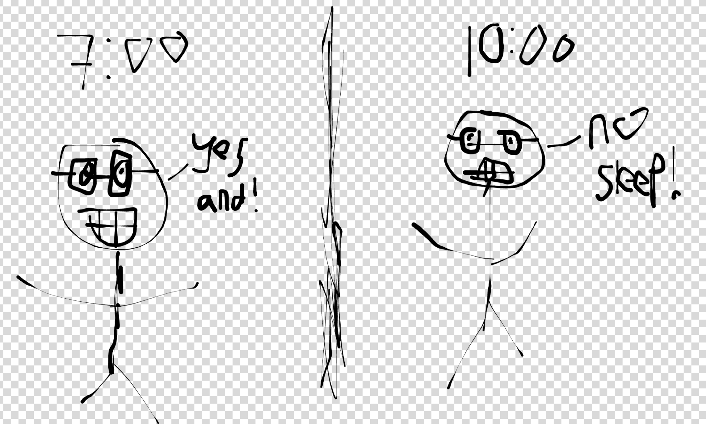
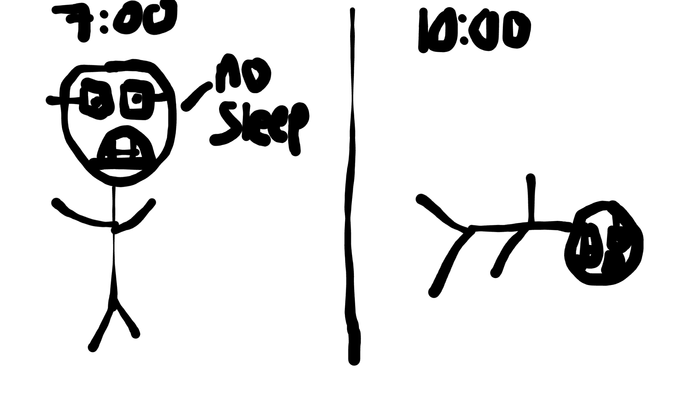
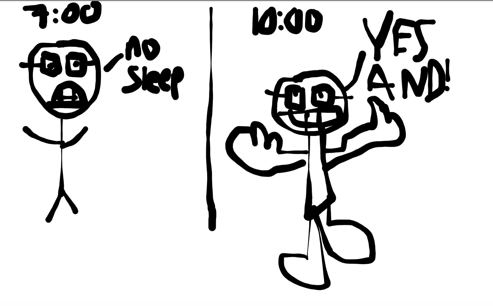
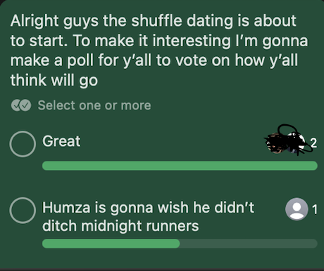
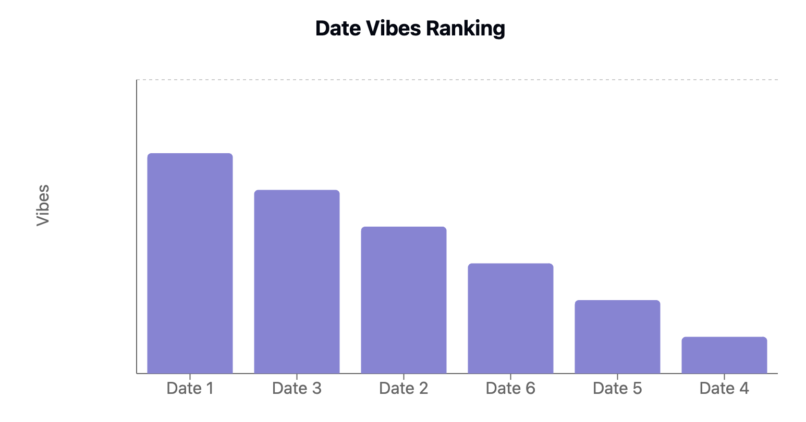
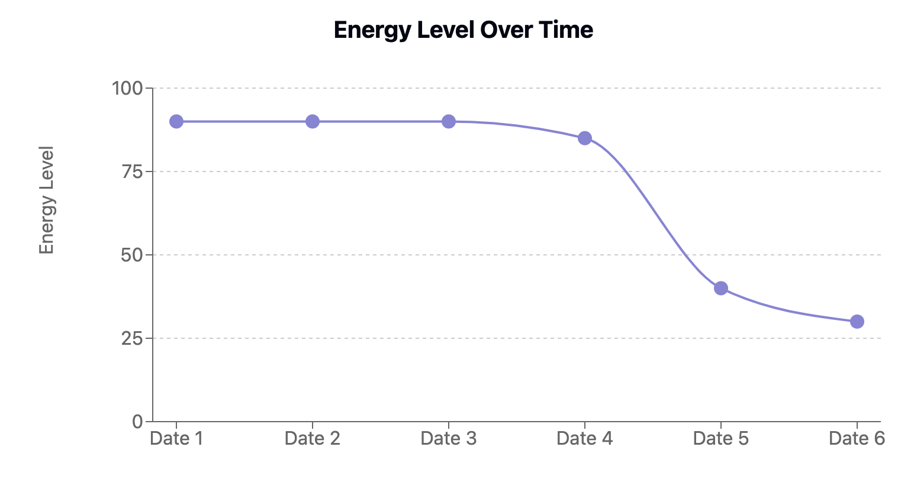
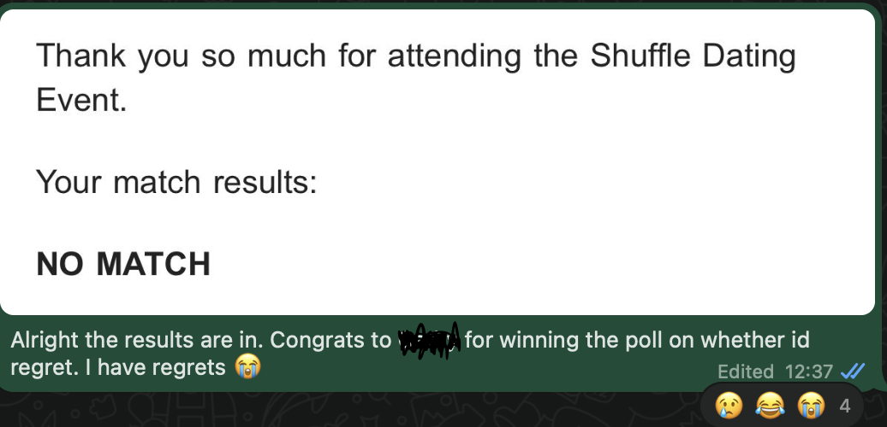
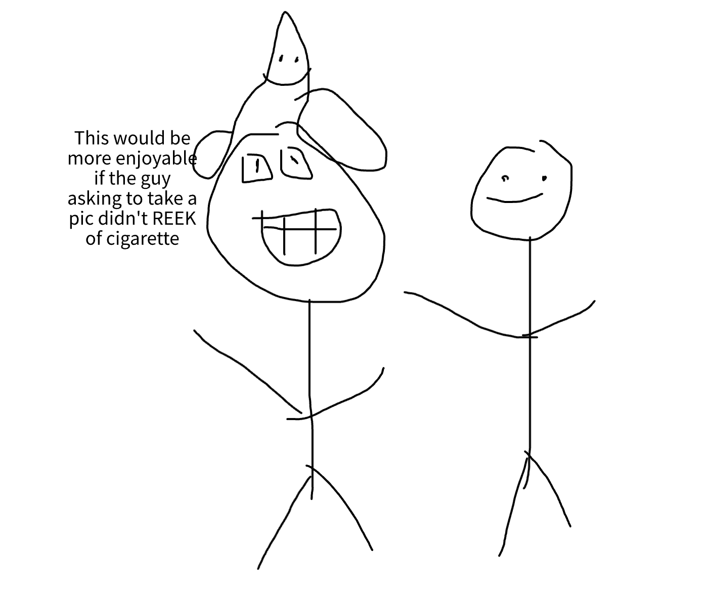
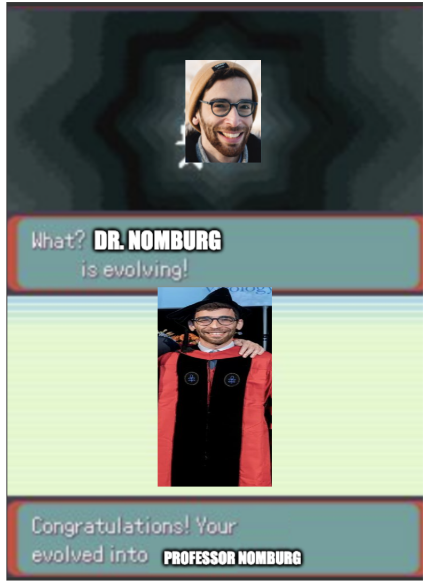

Episode 6
Feedback form
Before starting the newsletter I wanted to try to collect some feedback on how folks are feeling about this. No pressure to fill out but if you are interested I’m providing it here. Its totally anonymous of course. Since this is still a very new thing to me I am curious about how folks feel about it. Link is here. Again totally optional!
Monday
Work is fairly normal. After work I get Korean Barbeque with some of my friends. Some of you may not know that I absolutely LOVE KBBQ! Its one of my favorite meals and its always a great time. In fact one of my friendships all started out of a mutual love of KBBQ! I’ve gone to many KBBQ places across SF, Oakland, and South Bay. I even took a trip down to LA just to eat KBBQ there and am currently planning a trip to Korea to finally go to the KBBQ motherland!
The friends I went with haven’t had it nearly as much as me which meant I got to pick out a lot of the meats and show them my favorites as well as how I like to prepare them which was super fun! They hadn’t really had beef tongue, rib finger, or intestine before so I was super happy seeing that they liked them too! I also showed the best way to cut some of the thicker cuts of meat (its after you cook it a bit since it gets softer), and how you should do marinated meats as the last ones before a grill change. Sidenote: If any of y’all are reading this and haven’t had KBBQ and want to try it or haven’t had it and want someone to go with please hit me up!
Tuesday
Work is fairly normal. After work I have improv class, however something rare happened; I found myself lacking the energy to go! This is very surprising for me as I usually pretty much always have the energy to go to my improv class or whatever other activities I’m doing after work. I suspect its because lately I’ve been super busy every day and haven’t really had any downtime to myself. I think I’ve lately been taking on a bit too much in terms of hobbies and socializing. Between run club, improv, volunteering, and general socializing nearly every day it has kinda left me a little bit drained. I almost would have skipped if it wasn’t for the fact it was the last class. One of the other problems with improv is that it starts at 7pm and goes to 10 and by 9:30 I’m usually quite tired. Here is a diagram of how improv class normally is for me

And heres what I thought it would look like today

I was pleasantly surprised however when this improv class proved to be one of the most fun yet! As I mentioned this was the last class before the show I (may or may not be doing depending how tempted I am to go to my friends’ dinner) was doing and our whole class really hit a stride! It was one of the best sets I had done in a while and it was soooo energizing! The updated diagram is actually more like this

I was really stoked for the show (which again I may or may not do, we shall see what I decide!)
Wednesday
Work is fairly normal. After work I go to Midnight runners. Today I’m greeted with an all star cast including some of the true greats including Vinny, Alyson, Diego, AJ, Wesley, Yuxin, Aditya, as well as one of the greats whose name I only heard whispered in the annals of running Scott. Truly humbling stuff! Unfortunately I can only run for the first mile due to two reasons: The first was that I had something at 8 (you’ll see soon!), and the second was that I was still recovering from some shin splints and didn’t think I could do the full 5. Because of the first reason I both run in jeans and had my backpack with me so lets just say I ran the equivalent of 3 miles :D. After that I quickly go to my 8PM event which is a speedating thing called Shuffle Dating.
The way this works is I go to a bar (this time in Noe Valley), and you are assigned a series of dates to talk to each for 10 minutes with a 5 minute intermission in between.
I’ll be honest going into this I had a bit of regret. After all I was giving up the chance to hang out with the star studded cast above who I know I’d have a great time with in exchange for having what potentially could have been a terrible evening with a bunch of boring conversations. I was worried I’d regret the whole thing. I wanted to get a data driven approach and made a poll with a certain group of my friends as to whether I’d regret it or not

For this part we’re gonna go through each date and go over how I felt.
Date 1
In terms of vibes I definitely vibed with her the most. She was doing Oncology research at Stanford which I thought was super cool! I showed her one of my shirts I made and she mentioned back in college she had a similar sense of humor! Conversation seemed to flow pretty smoothly and we wound up talking up until the intermission ended. She seemed very nice and someone I’d love to meet again. The only con is she lives in Palo Alto currently and that feels like a long distance relationship.
Date 2
She was fun to talk to and also the cutest of the dates. She was a critical care nurse who apparently once saw a famous singer. Due to HIPPA she couldn’t say who it was but apparently it was some older singer. My headcanon until proven otherwise is that it Bob Dylan. Who knows if thats right or not but thats what I choose to believe until further notice.
Date 3
She was also pretty fun to talk to. She’s a runner whose running the SF half marathon in Febuary. Of the dates shes the only one I tried the bombing joke with and she seemed to genuinely laugh. We talked a lot about running since thats a common interest. I even told this date the bomb joke and she seemed to genuinely laugh!
Date 4
This is a real nosedive. This date I think we did whatever the opposite of vibe was. She was nice but I felt no real connection and for this date I really couldn’t wait for the intermission. Sometimes if the date is going well I may try to keep the convo going but time I immediately hit her with a “nice to meet you”, and then just took a break with my true bae (my phone). Some other context here is that with every date I talked to I showed her the magic trick and this date blew the whole trick by showing me the card I asker her to pick right away. I don’t know how well ability to be a magic trick audience member correlates with dateability but that was a signal.
Date 5
This date was better than 4 but worse than 2. Honestly not a whole lot to say here. She’s apparently a foodie but when I asked if she had a Yelp account she said she didn’t . After having brushed elbows with some of the real elites of Yelp I couldn’t help but feel a bit disappointed. Beyond that it was a true thumb sideways
Date 6
This date was also just sorta ok. She mentioned that she cat sits as a hobby which was kinda interesting. I didn’t know people really made a hobby out of that. She also mention she works as a battery engineer which was cool. I think it was something to do with anodes but I don’t remember all the details.
After this the speed dating finishes. Once the event is done you go through each date and select whether you want to match with them, be friends with them, or pass. I decided to match with the first 3 and pass on the second 3. I made a graph here of the overall vibes

One problem with this event is I got pretty drained after a while. Giving the same sort of intro and first conversation over and over again proved to be pretty tiring. I made a graph of my energy level here

Another miscellaneous observation was that it was interesting to see who would ask followup questions about my hobbies and who wouldn’t I pretty much always tried to ask at least some follow up questions about what everyone said but unfortunately the reverse wasn’t always true.
After speed dating I go home and try to sleep. Unfortunately I couldn’t and so I wind up helping one of my friends write her performance review for work. Some overall feedback I highlighted which a general audience may or may not find interesting is the following
Remember the Presenters Paradox. Basically when writing a performance review dont’ write out every possible thing you think is a strength, instead only talk about your highest level achievements. Unfortunately when processing this sort of information humans have a tendency to average rather than sum and including lower level achievements which aren’t bad but also aren’t quite as strong has the potential to dilute the review
Focus more on impact rather than process. People care more about the end impact rather than the road to get there. Ideally quantify that impact wherever possible. The rough imperfect guide I made for quantification is as follows (weighted towards stuff my friend talked about and not a universal guide etc.)
Amount of $$ saved or earned for the company
Number of customers helped
Number of tickets solved
Thursday
Today I take the day off work to go do an all day onsite for a job I’m applying for. For this I have to go to the company office and do an all day project. This is different from the standard job interview process in CS where folks typically give you a series of 1 hour interviews on things ranging from Algorithms to System Design. The Algorithm interviews are somewhat infamous in that they are more akin to something like the SAT where folks generally prepare by working off an online question bank called Leetcode which has questions that are either the exact same as or very identical to those asked in these interviews. Like many people I tend to hate these as they are often irrelevant to day to day work and preparing for them is a huge chore
The interview I went through was very different. It felt a lot more just like a day at the office where I was given a problem and had to figure out and code things up from scratch. The nature of the problem felt more akin to something I’d actually have to solve and it was open ended where I could use the internet and work with different tools to do what I needed. It was pretty enjoyable and I quite liked it.
Afterwards I did a presentation in front of most of the company on the problem, my approach, and how I would extend with more time. Unfortunately I did make a rather annoying mistake when presenting my code which was a huge face palm, but on the whole I think it went well. We shall see!
In the middle of the interview I get an email from the Shuffle Dating folks telling me I got no matches (more concretely this means that Dates 1-3 decided to pass on me). I sent this text to the group chat in response. We’ll talk more about why this may have happened later.

After my onsite I go to get boba with some of my friends. Well perhaps me getting water while they get boba is a better way to phrase that but same difference. When I tell them about the Shuffle dating one of them imparts on me some wisdom that perhaps going for a 1 mile run immediately before going to the Shuffle dating wasn’t the best idea. In his words it was definitely a one or the other thing. I tried to be greedy and have my cake and eat it too.
Friday
Our day starts off at 2AM when I have a hard time sleeping. I try to sleep for a while but instead find myself staying up the whole night / day. I pass time by playing the mobile version of Dune Imperium, a board game you can kinda think of as being like Settlers of Catan if Settlers of Catan didn’t suck.
Work today is normal except for the fact that I feel a distinct lack of motivation to do anything. I do just enough to do what I need to but with an undercurrent of laziness. Ah well. After work I go to get Korean food with a friend. I kinda wanted to get All you can Eat KBBQ to see if I could go for twice in a week but we wind up going to a non AYCE place which still slaps.
After that I go to my friends bar crawl. To be honest I think the odds are kinda stacked against me lasting long as I’m running on 3 hours of sleep along with the fact that I don’t drink. Undeterred I still decide to go. Unfortunately I learn that even though it says the bar crawl starts at 8:30 there seems to be some degree of “fashonable lateness” that I have yet to master. While I’m waiting some random guy sees my unicorn hat and wants to take a picture with me which I found interesting. I don’t have the actual photo so here’s a rendition I made complete with what I was thinking at the time

After that people begin coming to the crawl. Originally I suspect I’d only be able to last an hour but I actually last two and it was a lot of fun! Eventually I decide I do need some sleep and decide to go home
Saturday
Our day begins with trash pickup which is always fun followed by brunch at Plow. Unfortunately they wound up losing track of us so we wind up having to wait a long time to get food. If I was planning to eat a lot there that would have really annoyed me but since I wasn’t planning as such it only mildly annoyed me. Against all odds I do wind up eating there and get a side of Avocados which is reasonable.
Afterwards I help my friends sister move which is pretty easy (just had to lug a suitcase), and then I go and play boardgames with some of my friends. One of these friends is travelling for 7 weeks interviewing to be an Assistant Professor which is super exciting!
Before I continue with the newsletter wanted to wish you luck again Jason! I know you’ve been working super hard on your chalk talk (you’re probably grinding on it right now as you’re reading this!) And I can’t wait to hear about how awesome its gonna go! Made this meme in your honor

The board games go well although unfortunately I quickly go from winning to last place quite quickly over the course of the last few rounds. As someone who can get kinda competitive about these sort of things (especially when I pride myself on being good at them), this does somewhat sting. After sulking for a bit I then resolve that I’m gonna win and go out of my way to set a date and offer to host the next one so I can win for the sake of my pride. We’ll see how that goes that will be a topic for next weeks newsletter.
Sunday
As usual trash pickup is the name of the game to start off the day. After that I hang out with one of my trash friends and we talk more about the Shuffle dating event and he gives me some more useful advice. One thing I learned is that next time I shouldn’t wear the unicorn hat the next time I go to one of these events. He dropped this absolute banger “You should dress for the job you want not the job you have; And the job you have right now is single.”. Honestly this may just be the best part of the newsletter right there because that line hits hard. Before this we were talking and ribbing each other a bit and after one of my ribs he jokingly tells me to go fuck myself and I say “Well nobody from shuffledating will”. I dont think that line was quite as good but I still wanted to include it anyway.
He also tells me that perhaps doing the magic trick was also a mistake! So many things I need to improve for next time 😅. I also learn that perhaps I shouldn’t go all in on describing some of my more niche interests that may not resonate with others. For example perhaps instead of saying I do “trash pickup” I should say I do volunteering instead. Perhaps I should also lean more on the fact that I do running as thats an interest that a lot of folks can relate to. I often think about how to sell myself in the context of career related things but less so here. Before my next event perhaps I ought to work on my sales pitch 😄.
Throughout the conversation he also mentioned that I tend to judge myself a lot negatively which honestly may be true. I really appreciate the encouragement he gave me at the same time.
From there I go to meet up with some of my other friends. The one organizing is a friend who moved down to L.A and came back up to escape the fires. Thankfully she’s doing ok but wanted to come up here to get away from the craziness. We hang out for a while and then I go home to write the newsletter!